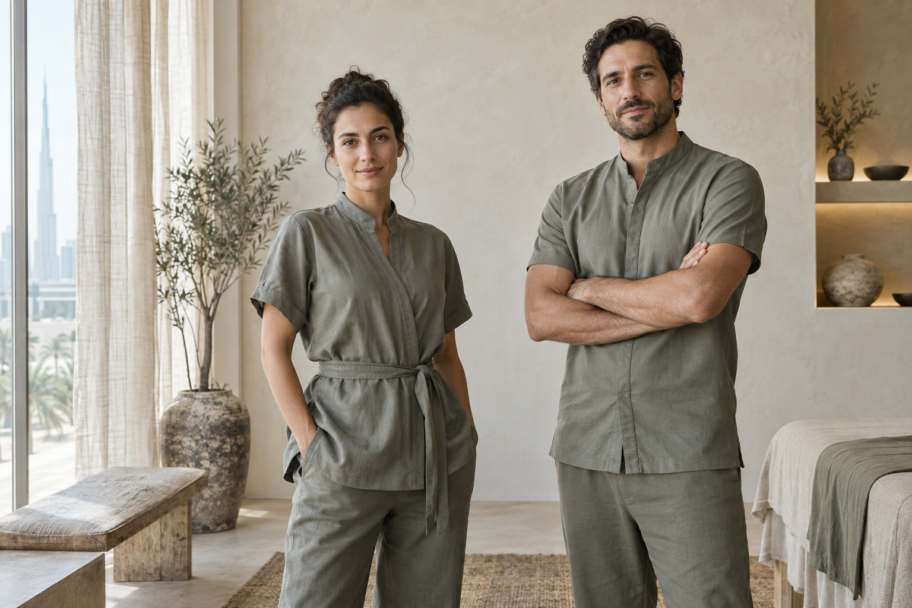
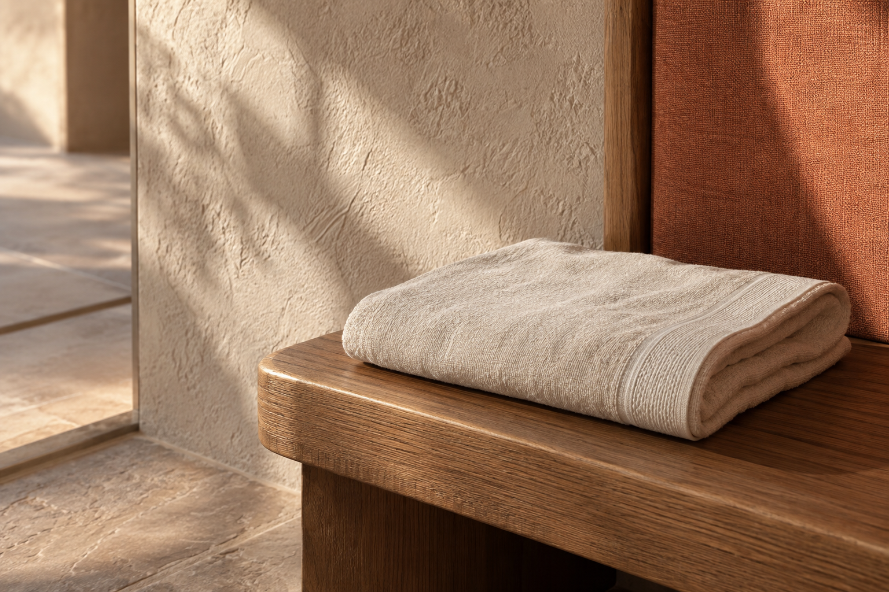

Расслабляющий массаж
Пауза, в которой восстанавливаются силы и возвращается ощущение себя.
↗
Не готовый сценарий, а работа, которая начинается с вашего состояния. Каждое прикосновение имеет смысл.

Сфокусированная работа с напряжением, чтобы вернуть телу ощущение свободы.
Пауза, в которой восстанавливаются силы и возвращается ощущение себя.
↗Работа с телом в движении, нагрузкой и возвращением к своему темпу.
↗Мы видим человека целиком: его образ жизни, привычное движение, то, что беспокоит сегодня. Поэтому каждый сеанс начинается с диалога и продолжается внимательной работой.
Слушаем ваш запрос и адаптируем работу под него.
Соединяем опыт, анатомию и точность рук.
Сохраняем спокойствие, приватность и ваш темп.
Знание техники важно. Но доверие рождается в том, как специалист слушает, объясняет и чувствует ваш отклик.

Настоящие отзывы появятся здесь после согласования публикации.
«В теле стало больше пространства, а в движении — уверенности».
Свет, материал и воздух поддерживают ощущение приватности. Здесь ничего не отвлекает от вашего времени.


Если ваш запрос требует отдельного разговора, расскажите нам о нём при записи.
Расскажите о самочувствии и целях. Мы поможем выбрать направление, которое подходит именно вам.
Продолжительность зависит от выбранной работы и вашей задачи. Уточним детали при записи.
Специальная подготовка не нужна. Приходите немного раньше, чтобы спокойно обсудить ваш запрос.
Свяжитесь с нами заранее, и мы предложим другое доступное время.
Оставьте несколько деталей. Мы свяжемся с вами, уточним запрос и предложим удобное время.